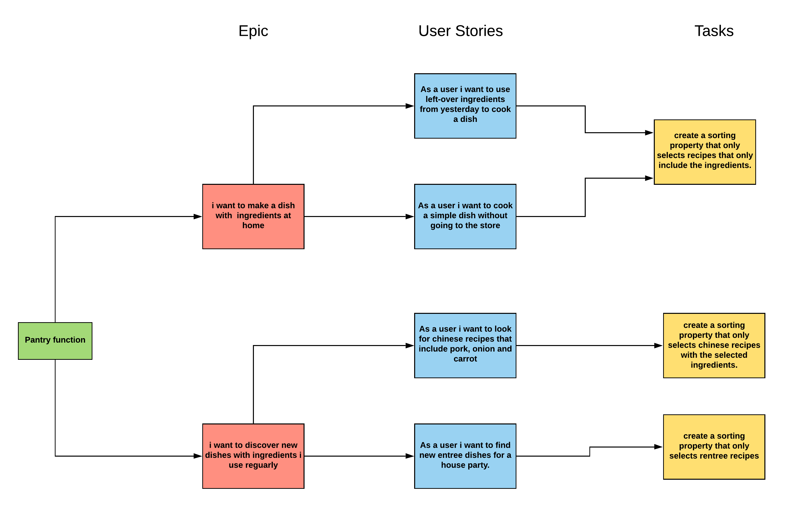
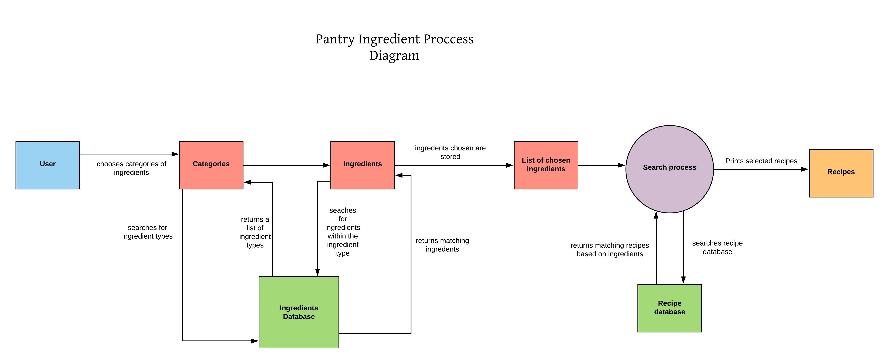

User stories
This is the Pantry Maker MVF
Design Diagrams
Explanation
The pantry recipe maker allows users to compile a list of which ingredients they have available. The website will filter through the recipe database and provide a recipe that uses only the ingredients provided by the user.Similar to the search function, the website will present a list of matching recipes that users can then select for further details. This allows users to quickly find a recipe they can make without needing to shop for new ingredients.